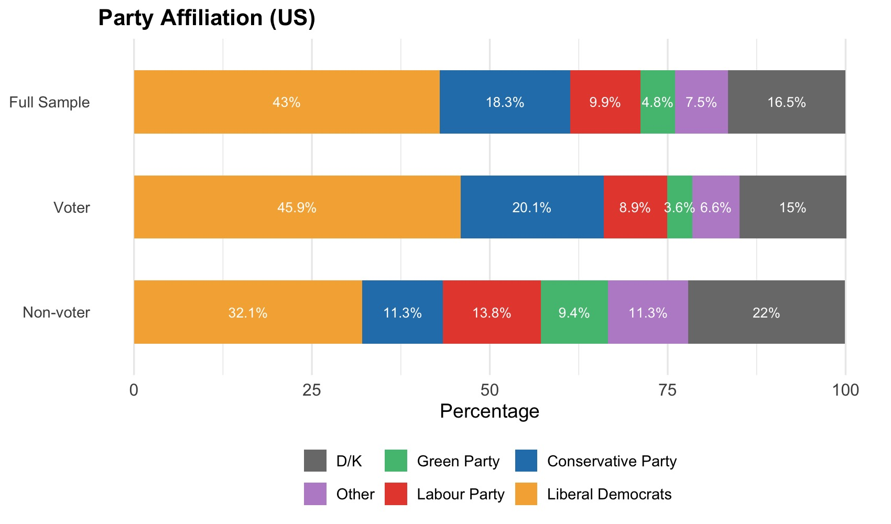
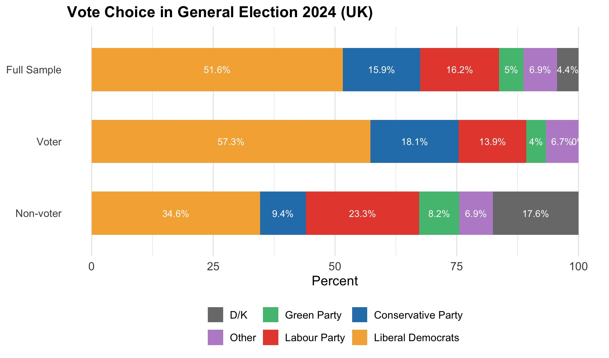
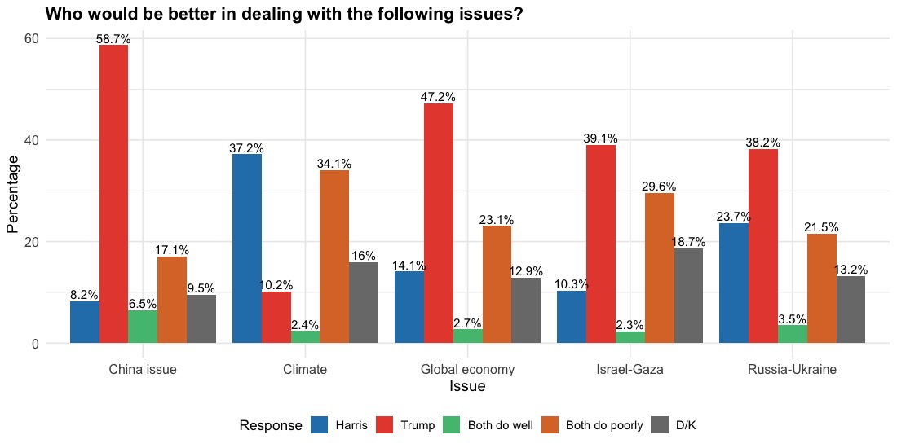
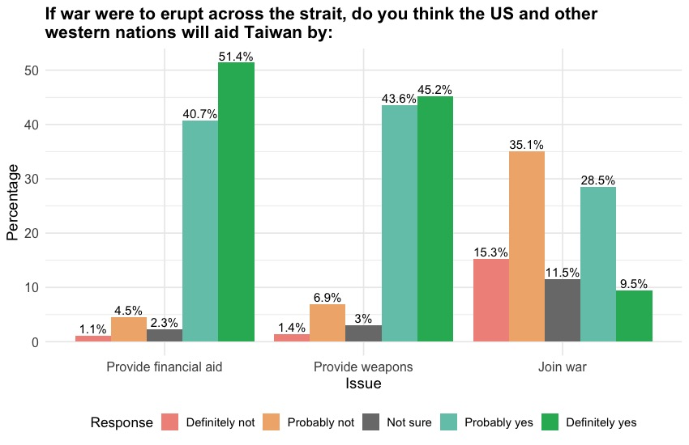
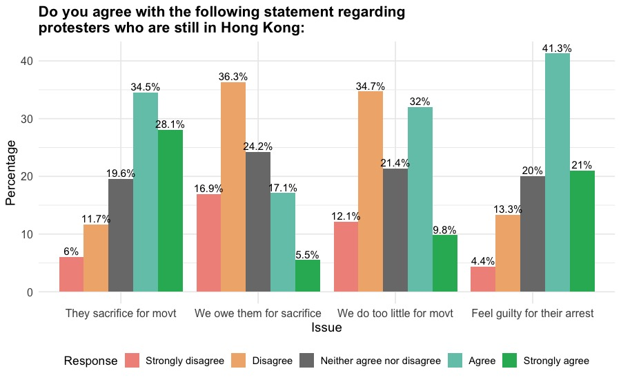
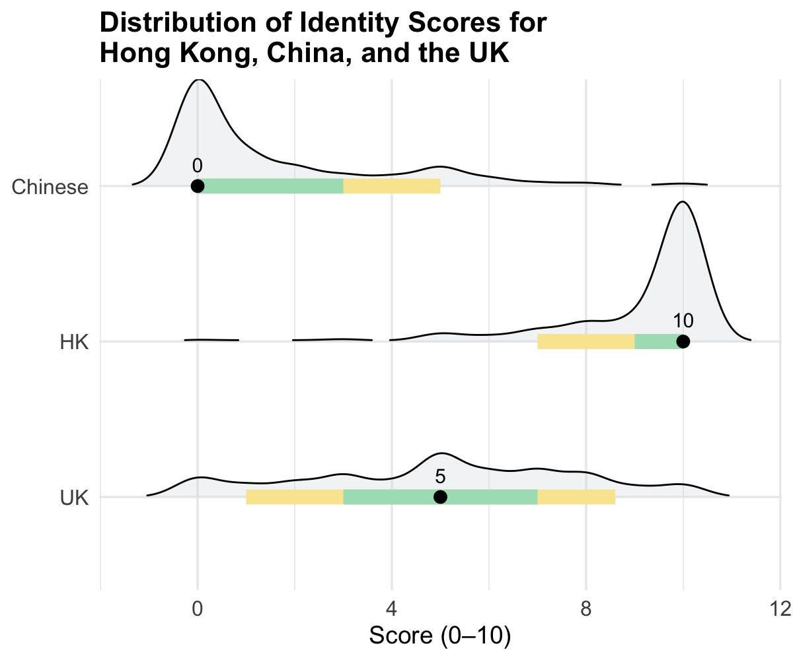
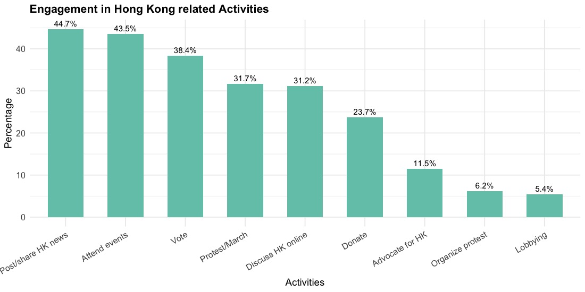

a. Hong Kong diaspora by citizenship and immigration status
Our UK sample yielded 756 completed responses. 77.5% of them are eligible to vote in the UK. People with citizenship status or BNO passport holders are eligible voters. A majority of the UK sample (66.4%) are BNO passport holders.
| Status | Count | Percentage | |||
| Native born citizen | 18 | 2.4% | |||
| Naturalized citizen | 67 | 8.9% | |||
| BNO passport holder | 501 | 66.4% | |||
| BNO visa holder | 110 | 14.6% | |||
| Work/student permit | 37 | 4.9% | |||
| Aslyum seeking | 13 | 1.7% | |||
| Temporary visa | 9 | 1.2% | |||
| Total | 756 | 100% | |||
b. Education level
| Category | Count | Percentage | |||
| Non-College Graduates | 135 | 18.3% | |||
| Bachelor's degree | 302 | 41% | |||
| Professional degree (e.g., MD, DDS, JD) | 23 | 3.1% | |||
| Master's & Doctorate degree | 263 | 35.7% | |||
| Prefer not to say | 14 | 1.9% | |||
c. Gender
| Category | Count | Percentage | |||
| Female | 294 | 39.5% | |||
| Male | 410 | 55% | |||
| Non-binary | 9 | 1.2% | |||
| Prefer not to say | 32 | 4.3% | |||
d. Age
| Category | Count | Percentage | |||
| 30 and below | 191 | 25.7% | |||
| 31 - 40 years old | 231 | 31% | |||
| 41 - 50 years old | 180 | 24.2% | |||
| 51 - 60 years old | 100 | 13.4% | |||
| 60+ years old | 42 | 5.6% | |||
e. Income Level
| Category | Count | Percentage | |||
| Under £25,999 | 229 | 30.3% | |||
| £26,000 to 74,999 | 320 | 42.8% | |||
| More than £75,000 | 114 | 15.1% | |||
| Perfer not to say | 82 | 11.9% | |||
f. Departure from Hong Kong
| Category | Count | Percentage | |||
| 2019 or before | 86 | 11.6% | |||
| After 2019 | 654 | 88.4% | |||
Generally speaking, which party do you identify with the most?

[For eligible voters] Which party did you vote for?
[For non-eligible voters] If you were eligible to vote in the UK, which party would you have voted for in 2024 General Election?

Thinking about the US presidential election candidates, who do you think would be better in dealing with the following issues? (China policy, Climate policy, Global economy, Israel-Gaza conflict, Ukraine-Russian conflict)

If war were to erupt across the strait, do you think the US and other western nations will aid Taiwan by providing financial and humanitarian aid, providing military aids/weapons, and joining the war?

Do you agree with the following statement regarding protesters who are still in Hong Kong:

Please use a scale of 0-10 to rate your strength of different identities, with 10 indicating extremely strong, 0 indicating extremely weak, and 5 indicating half-half. How would you rate yourself? (Hongkonger, Chinese, British):
The number indicates the median; the green bar shows 50% of respondents fall within this range; yellow bar is where 80% of response; the curve shows the distribution of the responses.

What activities have you engaged in supporting Hong Kong's pro-democracy movement in your host country in the past 12 months?
